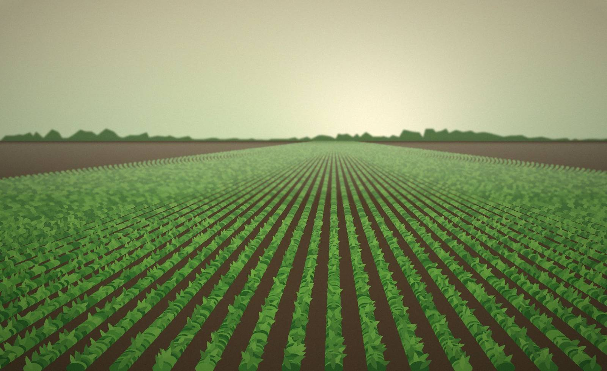

01 · Biomass-to-value model
Cattle biomass as a potential rural resource, not only waste.
Turning Rural Biomass into Renewable Value — converting locally available cattle biomass into useful renewable-energy and agricultural resources.
“Transform rural biomass from a waste challenge into a source of energy, value and agricultural sustainability.”

A proposed circular biomass-to-resource ecosystem connecting livestock, farmers, rural biomass, renewable energy, agriculture and digital technology.
Organized biomass collection, processing through anaerobic digestion, a renewable-energy pathway and appropriate use of digestate — with farmer participation, digital monitoring and transaction records.
How can locally available cattle biomass be organized, processed and converted into useful renewable energy and agricultural resources while creating value for rural communities?
Tap a node, or let the cycle play.
From farmer registration to digital monitoring.

Farmers or livestock owners register: profile, livestock details, biomass availability and collection location.
Digital prototype conceptFarmers provide cattle dung to a village-level collection network. Record: farmer → quantity → collection → payment / transaction.
ProposedBiomass is transported to an appropriate processing / biogas facility for anaerobic digestion.
ProposedAnaerobic digestion produces biogas. Biomethane / CBG would need purification, upgrading, compression and certified infrastructure.
CBG: future scopeDigestate / bio-slurry is processed and evaluated for appropriate agricultural use.
To be evaluatedTrack biomass collected, collection requests, processing status, energy and digestate records, and farmer transactions.
Digital prototype conceptAnaerobic digestion produces both an energy pathway and an agricultural-resource pathway.

Conceptual software prototype.
Future / extended implementation
Cattle biomass as a potential rural resource, not only waste.
Farmers participate in the biomass collection ecosystem.
Farmer → collection → processing → energy → agricultural resource.
Livestock → biomass → energy → digestate → agriculture → farm.
Can connect with AI, JeevaDhara, Seva and Agri Digital.
Village collection centre → processing facility → rural energy / agricultural resource.
Each phase validates the next. Nothing beyond the concept is claimed as built.
JeevaDhan expands BhoomiShakti into Agriculture + Livestock + Energy + Digital Technology + Circular Resources.
Planned directions — not implemented yet.
A future ecosystem concept: JeevaDhan’s digestate can connect with JeevaDhara’s soil approach.
Energy + digestate
Each project covers a different layer of agriculture. Together they form one connected ecosystem.
Livestock, biomass, energy and agriculture — connected in one circular rural economy.